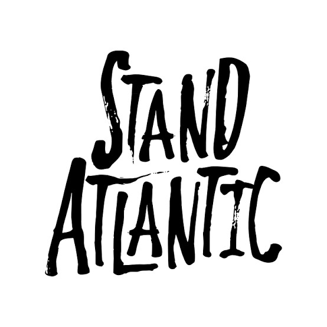
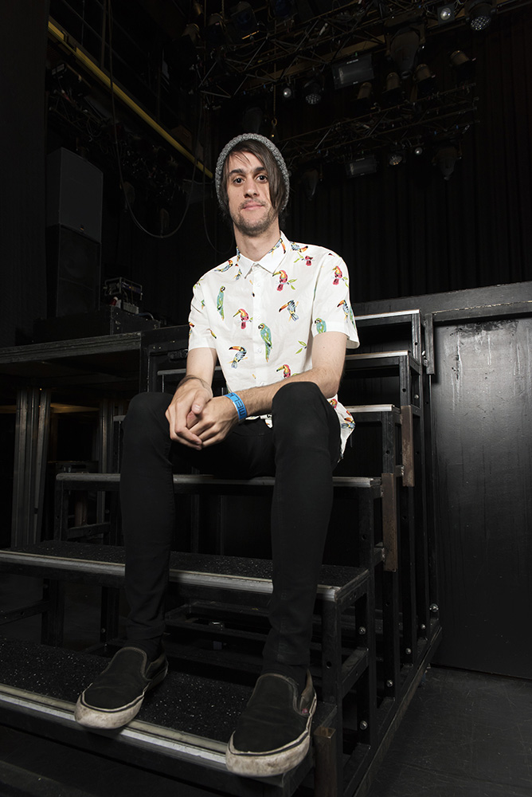

Stand Atlantic are an Australian pop punk band from Sydney, formed in 2012. The band consists of vocalist/guitarist Bonnie Fraser, guitarist David Potter, bassist Miki Rich, and drummer Jonno Panichi.

Band Members
Bonnie Fraser. vocals and rhythm guitar (2012–present)

David Potter. Lead guitar (2017–present), bass guitar (2012–2017)